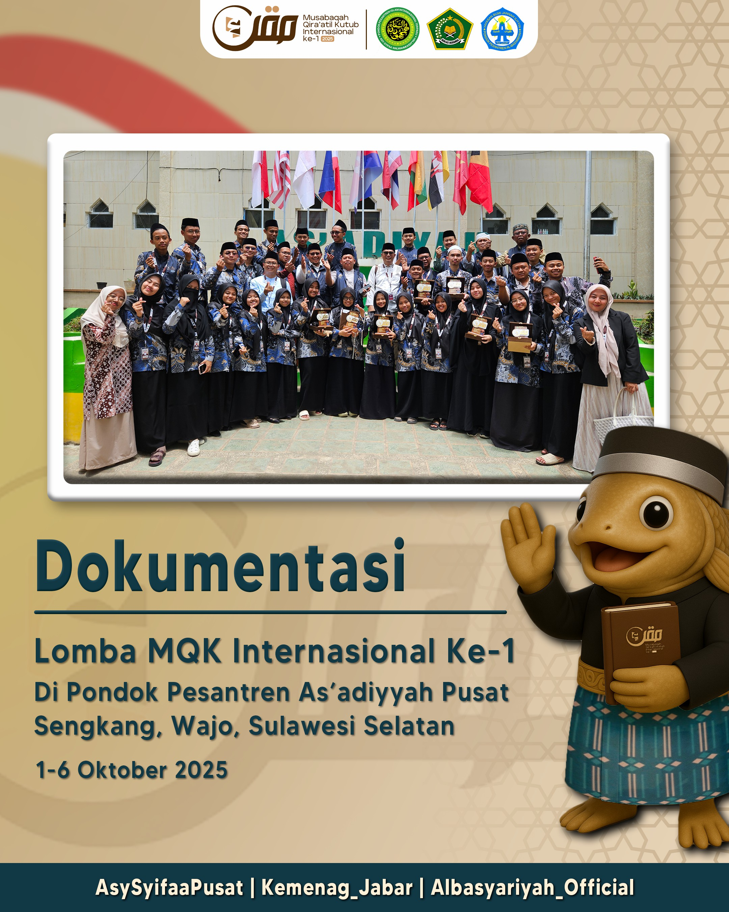

Galeri Foto Pondok Pesantren

PSB 2026
Pendaftaran Santri Baru Tahun Ajaran 2026

Wisuda VI
Wisuda Santri Pondok Pesantren Islam Internasional Terpadu Asy-Syifaa Wal Mahmuudiyyah VI

Malam Nishfu Sya'ban
Kegiatan Malam Nishfu Sya'ban di Pondok Pesantren Asy-Syifaa Wal Mahmuudiyyah

Rajaban Akbar 1447 H
Kegiatan Rajaban Akbar di Pondok Pesantren Asy-Syifaa Wal Mahmuudiyyah

Sholat Ghoib Habib Umar Al-Jaelani
Kegiatan Sholat Ghoib Habib Umar Al-Jaelani di Pondok Pesantren Asy-Syifaa Wal Mahmuudiyyah

Dars Fajr Al Haddar
Kegiatan Dars Fajr Al Haddar di Pondok Pesantren Asy-Syifaa Wal Mahmuudiyyah

JUARA MQK SUMEDANG 2025
Santri-Santri Asy-Syifaa Wal Mahmuudiyyah yang menjuarai MQK SUMEDANG 2025

Dauroh Ilmiyyah Lora Ismail
Kegiatan Dauroh Ilmiyyah Lora Ismail di Pondok Pesantren Asy-Syifaa Wal Mahmuudiyyah

Dars Fajr Sayyid Alwi
Kegiatan Dars Fajr Sayyid Alwi di Pondok Pesantren Asy-Syifaa Wal Mahmuudiyyah

Tabligh Akbar Habib Muhammad Al-Habsy
Kegiatan Tabligh Akbar Habib Muhammad Al-Habsy di Pondok Pesantren Asy-Syifaa Wal Mahmuudiyyah

Upacara Hari Santri
Kegiatan Upacara Hari Santri di Pondok Pesantren Asy-Syifaa Wal Mahmuudiyyah

JUARA MQKI
Santri-Santri Asy-Syifaa Wal Mahmuudiyyah yang menjuarai MQKI

MQKI-I
Momentum MQKI-I di Pondok Pesantren As'adiyyah Wajo, Sulawesi Selatan

Dauroh Ilmiyyah Syeikh Sholeh
Kegiatan Dauroh Ilmiyyah Syeikh Sholeh di Pondok Pesantren Asy-Syifaa Wal Mahmuudiyyah

Dauroh Ilmiyyah Al Munsib Al Athos
Kegiatan Dauroh Ilmiyyah Al Munsib Al Athos di Pondok Pesantren Asy-Syifaa Wal Mahmuudiyyah

Maulid Akbar 1447 H
Kegiatan Maulid Akbar 1447 H di Pondok Pesantren Asy-Syifaa Wal Mahmuudiyyah
Prepare Maulid Akbar 1447 H
Prepare Maulid Akbar 1447 H di Pondok Pesantren Asy-Syifaa Wal Mahmuudiyyah

Maulid Pusaka 1447 H
Kegiatan Maulid Pusaka 1447 H di Pondok Pesantren Asy-Syifaa Wal Mahmuudiyyah

Dauroh Ilmiyyah Qiro'ah
Kegiatan Dauroh Ilmiyyah Qiro'ah Bersama Syeikh Ya'qub bin Sholeh bin Salim

Lomba Agustusan
Kegiatan Lomba Agustusan di Pondok Pesantren Asy-Syifaa Wal Mahmuudiyyah

Upacara 17 Agustus 2025
Kegiatan Upacara 17 Agustus 2025 di Pondok Pesantren Asy-Syifaa Wal Mahmuudiyyah

JUARA MQKN JABAR
Santri-Santri yang menjuarai MQKN JABAR 2025

Perkenalan Santri Baru 2025
Perkenalan Santri Baru 2025 di Pondok Pesantren Asy-Syifaa Wal Mahmuudiyyah

Kedatangan Santri Baru
Moment Kedatangan Santri Baru 2025 di Pondok Pesantren Asy-Syifaa Wal Mahmuudiyyah

Selamat & Sukses
Selamat & Sukses🔥Untuk santri Alumni Asy-Syifaa Yang Telah Lulus Seleksi UM-PTKIN, UIN Sunan Gunung Jati, Bandung.

Pawai Obor Tahun Baru Islam 1447 H
Pawai Obor Tahun Baru Islam 1447 H di Pondok Pesantren Asy-Syifaa Wal Mahmuudiyyah

Acara Puncak Tasyrik
Acara Puncak Tasyrik di Pondok Pesantren Asy-Syifaa Wal Mahmuudiyyah

TASYRIK CHAMPIONSHIP
TASYRIK CHAMPIONSHIP di Pondok Pesantren Asy-Syifaa Wal Mahmuudiyyah